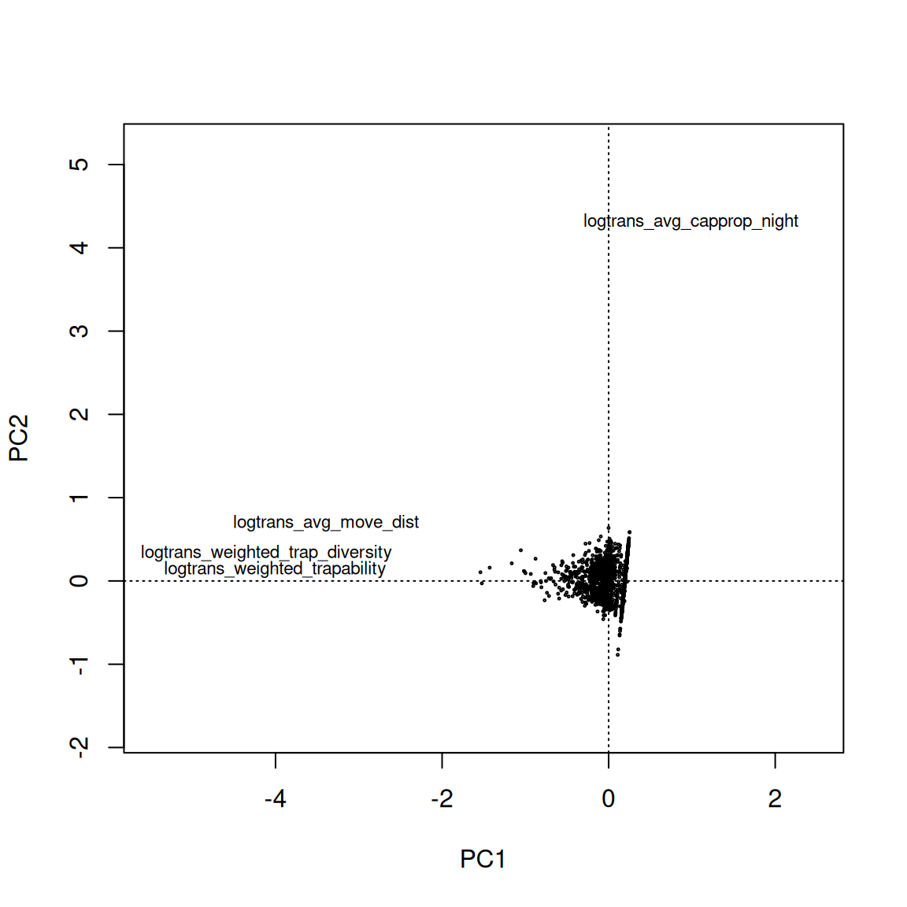

Structural equation models
Structural equation models are a special case of path analysis, which describe the directed dependence among sets of variables, often viewed as directed acyclic graphs (e.g., Figure 18). These are an ideal tool for understanding the relationships within and among many levels of complex system with many variables. We will use this approach to model Borrelia infection competence of Peromyscus.
Figure 18: Example directed acyclic graph, with two response (Y) variables and two predictor (X) variables. In this case, Y1 is both a resonse (X1, X2) and a predictor (Y2).
Modeling approach
Towards finding a good explanatory model of Borrelia infection competence among Peromyscus, we will fit a few different SEMs with different objectives. The key data for each approach will be Peromyscus data for eight NEON sites. The variables we will consider in each model are
Study design variables including NEON site and plot identity (
siteID,plotID), andyearof the observations as random effects;Mouse general characteristics including individual identity (
iid), sex (male), reproductive status (sex_mature), and weight (weight);Mouse behavioral characteristics including capture time (
captime), trapability (trapable), trap diversity (trapdiv), and movement (movement);Contact with ticks, specifically whether or not ticks were attached at capture (
ticks).Immunity information including PCA for gene expression of resistance and tolerance genes (
res PC,tol PC) as well as Borrelia infection status and burden (infected,log burden); andClimatic information including principal components for short-term weather (
wthr PC1,wthr PC2) and long-term average site climate (clim PC1,clim PC2).
In general, the kinds of models we want to fit are as follows:
Model selection
The form of each SEM presented below were arrived at with the following procedure:
Omnibus models were created for each component model, which were combined into an omnibus SEM.
Model selection was performed on each component model by:
removing any “singular” (i.e., variance = 0) random effects,
recursively removing variables with non-significant (fixed) effects, one by one. if any higher-order effects (interactions) were significant, all constituent first-order (main) effects were retained regardless of significance.
some non-significant fixed effects were added back into the model if either a) the effect was considered “crucial” to our hypothesis. In practice this meant including links along the path behavior -> ticks -> resistance -> infection -> tolerance or; b) the removal resulted in other non-removed factors losing significance.
A reduced SEM was fit by combining the selected component models from step (2).
Additional paths were added to the SEM according tests of directed separation (dsep), which indicates that a missing path is important for explaining the observed data.
Some non-significant paths were removed if: a) they were not considered critical to our understanding of the system and; b) the removal was not contraindicated by a follow-up dsep test.
Due to the complexity of these models, and at the recommendation of the
piecewiseSEM package authors, This study considers \(P < 0.1\) as the
p-value cutoff for statistical significance in the SEMs.
Latent and Composite variables
The key feature that distinguishes SEMs from path analyses are the ability to include latent (i.e., unmeasured) and composite variables. We have not yet , included these types of variables into our models, but some interesting options might be:
“Behavior” is an obvious latent variable to explore. It would be constructed such that it depends on the behavior metrics that we have measured (i.e.,, activity time, movement, learning) as well as sex and reproductive status.
A “body condition” composite variable, constructed from all the size traits recorded by NEON may be a better predictor variable than weight alone, though it would require using a smaller data set since weight was by far the most measured physical trait.
“Immunity” would be a natural latent or composite variable constructed from the six gene expression variables. This may capture more variation than the principal component proxies we are currently using.
It is unclear, and not well-documented, how to include either latent or
composite variables in piecewiseSEM.
Update: After further investigation, piecewiseSEM does not support
either of these use cases. If needed, the Bayesian implementation in the
brms package
supposedly supports it.
Complete cases
The first set of models is fit with only the subset of observations for which information for all variables is available. As such, it has some limitations in its power, but it is the most “defensible” explanatory model because it does not draw conclusions beyond the scope of its data. Models using more of the data will be explored in the next section.
Burden
Figure 19 visualize a burden SEM fit to a “complete” data set. While this model is very interesting, one of the primary paths of interest is not significant (behavior -> ticks -> resistance -> burden -> tolerance). It is possible that the “behavior -> ticks” path is improved by a model which is not limited by the completeness restriction. Table 11 summarizes the fit (\(R^2\)) of each of the component models.
Figure 19: Directed acyclycal graph of selected burden SEM model, fit with complete cases. The goodness-of-fit P-value is 0.66, which indicates that this model is not statistically different from an ‘ideal’ model of these data. Orange vectors represent positive effects, blue represent negative effects and grey represents non-significant (P > 0.1) effects. The width of a vector is proportional to the magnitude of its effect.
| Response | family | link | method | Marginal | Conditional |
|---|---|---|---|---|---|
| tol PC | gaussian | identity | none | 0.05 | 0.32 |
| log burden | gaussian | identity | none | 0.07 | 0.20 |
| res PC | gaussian | identity | none | 0.07 | 0.27 |
| ticks | binomial | logit | theoretical | 0.14 | 0.27 |
| captime | gaussian | identity | none | 0.12 | NA |
| trapdiv | gaussian | identity | none | 0.57 | 0.66 |
| trapable | gaussian | identity | none | 0.25 | NA |
| movement | gaussian | identity | none | 0.07 | NA |
Infection status
Figure 20 and Table 12 visualize a the infection SEM fit to a “complete” data set. Again, while this model is interesting, there are no significant paths between our primary variables of interest (behavior -> ticks -> resistance -> infection -> tolerance).
Figure 20: Directed acyclycal graph of selected infection SEM model, fit with complete cases. The goodness-of-fit P-value is 0.9, which indicates that this model is not statistically different from an ‘ideal’ model of these data. Orange vectors represent positive effects, blue represent negative effects and grey represents non-significant (P > 0.1) effects. The width of a vector is proportional to the magnitude of its effect.
| Response | family | link | method | Marginal | Conditional |
|---|---|---|---|---|---|
| tol PC | gaussian | identity | none | 0.06 | 0.30 |
| infected | binomial | logit | theoretical | 0.31 | 0.64 |
| res PC | gaussian | identity | none | 0.07 | 0.27 |
| ticks | binomial | logit | theoretical | 0.14 | 0.27 |
| captime | gaussian | identity | none | 0.12 | NA |
| trapdiv | gaussian | identity | none | 0.57 | 0.66 |
| trapable | gaussian | identity | none | 0.27 | NA |
| movement | gaussian | identity | none | 0.07 | NA |
Maximal cases
In contrast to the (#complete-cases) section above, these next SEMs are fit with component models that use all available observations. This means that some paths (i.e., those involving resistance and tolerance expression) are fit with fewer samples than other. This gives the both the components and overall model more power to estimate the effects, but does assume that the patterns among individuals with observed characteristics are representative of individuals with characteristics not directly observed.
Burden
Figure 21 shows the selected burden model, fit with the maximal data for each path. And Table 13 shows the corresponding \(R^2\) table. Still the paths between burden, gene expression, and ticks, and behavior are not significant.
Figure 21: Directed acyclycal graph of selected burden SEM model, fit with maximal cases. The goodness-of-fit P-value is 0.91, which indicates that this model is not statistically different from an ‘ideal’ model of these data. Orange vectors represent positive effects, blue represent negative effects and grey represents non-significant (P > 0.1) effects. The width of a vector is proportional to the magnitude of its effect.
| Response | family | link | method | Marginal | Conditional |
|---|---|---|---|---|---|
| tol PC | gaussian | identity | none | 0.05 | 0.24 |
| log burden | gaussian | identity | none | 0.08 | 0.19 |
| res PC | gaussian | identity | none | 0.03 | 0.14 |
| ticks | binomial | logit | theoretical | 0.18 | 0.29 |
| captime | gaussian | identity | none | 0.06 | NA |
| trapdiv | gaussian | identity | none | 0.71 | 0.73 |
| trapable | gaussian | identity | none | 0.09 | NA |
| movement | gaussian | identity | none | 0.00 | NA |
Infection Status
Figure 22 and Table (14) summarize the infection status SEM, fit with maximal data. This is the first model that suggests a link from ticks -> infection -> tolerance expression.
Figure 22: Directed acyclycal graph of selected burden SEM model, fit with maximal cases. The goodness-of-fit P-value is 0.95, which indicates that this model is not statistically different from an ‘ideal’ model of these data. Orange vectors represent positive effects, blue represent negative effects and grey represents non-significant (P > 0.1) effects. The width of a vector is proportional to the magnitude of its effect.
| Response | family | link | method | Marginal | Conditional |
|---|---|---|---|---|---|
| tol PC | gaussian | identity | none | 0.06 | 0.23 |
| infected | binomial | logit | theoretical | 0.30 | 0.65 |
| res PC | gaussian | identity | none | 0.03 | 0.14 |
| ticks | binomial | logit | theoretical | 0.18 | 0.29 |
| captime | gaussian | identity | none | 0.06 | NA |
| trapdiv | gaussian | identity | none | 0.71 | 0.73 |
| trapable | gaussian | identity | none | 0.09 | NA |
| movement | gaussian | identity | none | 0.00 | NA |
Burden and Infection
Figure 23 and Table 15 summarize what is probably the most interesting model of this system; it includes both infection and burden and is fit with the maximal data set. This SEM suggests that:
Borrelia infection in an individual Peromyscus is most explained by the three-way interaction between the individual’s sex, reproductive status, and weight; contact with ticks; and weather conditions, in addition to random spatial and temporal effects (35% of variation).
The quantitative Borrelia burden within an individual, beyond its infection status, is best explained by the individuals sex (there is also a marginal interaction between sex and weight: \(P=0.12\)), in addition to random spatial effects (1% of total variation). Unsurprisingly, most of the variation in burden is explained by infection status.
Expression of tolerance genes was best explained by individual reproductive status, behavior (trap diversity), and Borrelia infection status, in addition to random spatial and temporal effects. The burden of Borrelia apparently had no bearing on tolerance expression (removed during model selection).
Expression of resistance genes was best explained by individual sex, weight, and contact with ticks (there is also a marginal effect of weather: \(P=0.13\)), in addition to random spatial effects. Resistance expression apparently had no bearing on either Borrelia infection status or burden (\(P>0.75\)).
Our metrics of behavior (capture time, trapability, trap diversity, movement distance) did not explain significant variation in Borrelia infection, burden, or contact with ticks – beyond that already explained by sex, reproductive status, and weight.
Figure 23: Directed acyclycal graph of selected burden SEM model, fit with maximal cases. The goodness-of-fit P-value is 0.92, which indicates that this model is not statistically different from an ‘ideal’ model of these data. Orange vectors represent positive effects, blue represent negative effects and grey represents non-significant (P > 0.1) effects. The width of a vector is proportional to the magnitude of its effect.
| Response | family | link | method | Marginal | Conditional |
|---|---|---|---|---|---|
| tol PC | gaussian | identity | none | 0.06 | 0.23 |
| log burden | gaussian | identity | none | 0.53 | 0.54 |
| infected | binomial | logit | theoretical | 0.30 | 0.65 |
| res PC | gaussian | identity | none | 0.03 | 0.14 |
| ticks | binomial | logit | theoretical | 0.18 | 0.29 |
| captime | gaussian | identity | none | 0.06 | NA |
| trapdiv | gaussian | identity | none | 0.71 | 0.73 |
| trapable | gaussian | identity | none | 0.09 | NA |
| movement | gaussian | identity | none | 0.00 | NA |
Alternate Models
Here, we’ll look at some olternate versions of a model
Tolerance as predictor
Swapping tolerance from a response to a predictor of infection/burden (compared with the model in Figure 23) yields a model where the link between tolerance and infection is not significant (Figure 24).
Figure 24: Directed acyclycal graph of an alternate (tolerance as a response) burden SEM model, fit with maximal cases. The goodness-of-fit P-value is 0.93, which indicates that this model is not statistically different from an ‘ideal’ model of these data. Orange vectors represent positive effects, blue represent negative effects and grey represents non-significant (P > 0.1) effects. The width of a vector is proportional to the magnitude of its effect.
Condensed behaviors (PCA)
Figure 25 shows the principal component analysis of our
four behavioral traits. These behavior traits were transformed with the function
log(x + min(x) + 1). Here, the primary PC is associated with trapability,
trap diversity, and movement distance, while the the second axis is associated
capture timing. As Figure 26, an SEM wherein the four
individual behavior traits are condensed into their principal components
exhibits no relationships with those principal components and any of our
response variables of interest. This pattern also remains when tolerance is
treated as a predictor of infection (not shown).

Figure 25: Peromyscus behavior PCA. PC1 explains 47% of the variation and PC2 explains an additional 25%.
Figure 26: Directed acyclycal graph of an alternate infection SEM model, fit with maximal cases and behavioral PCs as predictors. The goodness-of-fit P-value is 0.78, which indicates that this model is not statistically different from an ‘ideal’ model of these data. Orange vectors represent positive effects, blue represent negative effects and grey represents non-significant (P > 0.1) effects. The width of a vector is proportional to the magnitude of its effect.
No interactions
Because of the interaction effect of sex:male:mature on infection status in model 23, it is not possible to calculate the full scope of the direct and indirect effects of sex (for example) on infection.
TODO: Fit a SEM without interactions - main effects only.